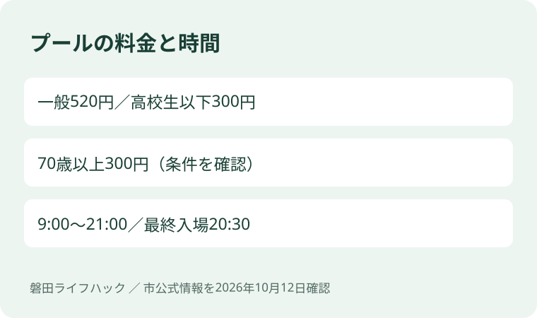
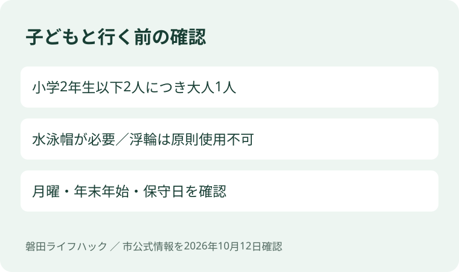

磐田温水プール｜料金・利用時間と子どもの付き添い
磐田温水プールは刑部島274-3。一般520円、高校生以下・70歳以上300円。最終入場、休場日、小学2年生以下の付き添い条件を整理します。
訂正のお知らせ
旧記事の所在地、年齢別料金、利用時間、持ち物の一部に誤りがありました。磐田温水プールの市公式施設案内に基づいて訂正しました。
2026年10月12日、下記の出典と照合して本文・図版を更新しました。
刑部島にある磐田温水プール
磐田温水プールの所在地は磐田市刑部島274-3、電話は0538-33-8855です。御厨にあるという旧記事の記載は誤りでした。同じ市内の総合体育館とは別の施設なので、地図で目的地を確認してから出かけてください。
プールの利用時間は9:00〜21:00、最終入場は20:30、更衣室からの退出は21:15までです。泳げる時間と入場締め切り、着替えを終える時間を区別して予定を組みましょう。日曜だけ17時に終わるとした旧記事の説明も訂正します。
料金は70歳の区分に注意
プールの利用料は一般520円、高校生以下300円、70歳以上300円です。65歳以上の区分ではありません。70歳以上の料金と、障がい者手帳等の提示による減額は併用できないとされています。該当する場合は証明方法も施設へ確認してください。
2階のトレーニングルームは中学生以上が対象で、初回に機器の取扱い説明があります。一般520円、高校生以下・70歳以上300円です。プールとの共通利用券は一般830円、高校生以下・70歳以上520円で、単独利用券とは分かれています。
トレーニングルームの時間は8:30〜21:15、最終入場20:45、更衣室退出21:30です。プールと同じ建物でも時間と対象年齢が違います。また、かぶと塚公園の総合体育館トレーニング室は高校生以上・初回講習が必要で、別の利用条件です。
子どもの付き添いと持ち物
プールは生後6か月以上から利用でき、おむつの取れていない乳幼児は水遊び用パンツが必要です。小学2年生以下の子どもは2人につき18歳以上の大人1人の付き添いが必要です。家族で行く場合は、子どもの人数と付き添う大人の人数を先に確認しましょう。
水泳帽は着用が必要です。浮輪は原則使用できず、からだの不自由な方には専用浮輪の貸し出しがあります。一般用25mプールのほか、子ども・幼児用プール等がありますが、流水プールは歩行専用で高校生以上が対象です。すべてのエリアを同じ条件で使えるわけではありません。
休場日と出発前の確認
休場日は毎週月曜と12月29日〜1月3日です。市は例年10月頃にプールメンテナンスがあることも案内しています。秋に利用する場合は特に、施設サイトまたは電話で休止日を確認してください。通常の営業時間だけを見て来場しないようにしましょう。
良い点と注文したい点
年齢別料金、最終入場、付き添い人数が公開されているのは、家族で計画を立てる際の良い点です。一方、プールとトレーニングルームの条件が混ざると準備を誤ります。当サイトでも設備ごとの対象と時間を分け、確認できないルールは記載しない形へ改めました。
対案・結論
出発前に、臨時休場、利用する設備、人数と年齢、必要な持ち物の順で確認してください。料金は利用する人ごとに区分を分けて計算します。減額や回数券の適用について迷う場合は、購入前に受付へ確認するのが確実です。
大石の視点
休日の行き先は、施設までの距離だけでなく、付き添いが可能な人数と移動・着替えの時間を含めて考えると選びやすくなります。子どもが利用できる場所と大人だけが使える場所を把握しておくことも、無理のない家族の予定づくりにつながります。


参考にした公式情報
最終確認日：2026-10-12。臨時休止・受付状況は利用前に公式ページで確認してください。